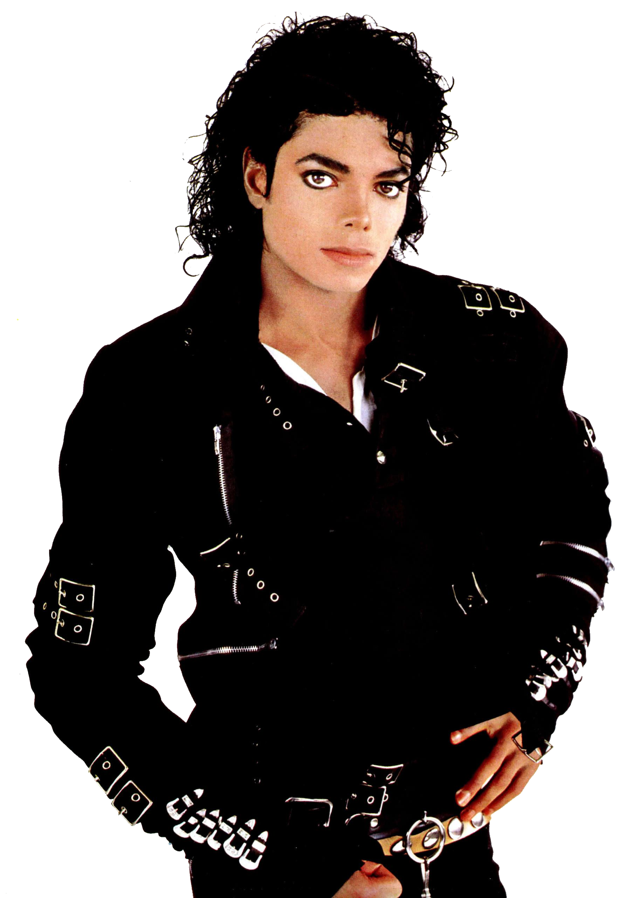

Michael Joseph Jackson fue un cantante, compositor, productor discográfico, bailarín, actor y filántropo estadounidense. Conocido como el «Rey del Pop», sus contribuciones y reconocimiento en la historia de la música y el baile, así como su publicitada vida personal, lo convirtieron en una figura internacional en la cultura popular durante más de cuatro décadas. Es reconocido como la estrella de música pop más exitosa en el mundo. No obstante, su música incluyó una amplia acepción de subgéneros como el rhythm and blues (soul y funk), rock, disco y dance. Comenzó su carrera artística a mediados de los años 1960 en la agrupación musical The Jackson 5, en la cual publicó, junto con algunos de sus hermanos, diez álbumes hasta 1975. En 1971 inició su carrera como solista, aunque siguió perteneciendo al grupo. A principios de la década de 1980, Jackson se convirtió en una figura dominante en la música popular. Sus vídeos musicales, entre los que se destacan «Beat It», «Billie Jean» y «Thriller», de su álbum de 1982 Thriller, son acreditados como una ruptura de las barreras raciales y la transformación del medio en una forma de arte y herramienta promocional. La popularidad de estos ayudó a llevar a la cadena televisiva MTV a la fama. El álbum Bad (1987) produjo el número uno de los sencillos «I Just Can't Stop Loving You», «Bad», «The Way You Make Me Feel», «Man in the Mirror» y «Dirty Diana» en el Billboard Hot 100, por lo que se convirtió en el primer álbum en tener cinco sencillos número uno en ese ranking. Continuó innovando con vídeos como «Black or White» y «Scream» a lo largo de la década de 1990, y forjó una reputación como artista solista en varias giras. A través de sus presentaciones en escena y en vídeo, Jackson popularizó una serie de técnicas de baile complicadas, como el robot y el moonwalk, a las cuales dio el nombre. Su sonido y estilo distintivos han influido en numerosos artistas de diversos géneros musicales.
Michael Joseph Jackson nació el 29 de agosto de 1958. Era el octavo de los diez hijos de la familia Jackson, una familia afroamericana de clase trabajadora que vivía en una casa de dos dormitorios en Jackson Street, en Gary, Indiana, una ciudad industrial en el área metropolitana de Chicago. Su madre, Katherine Esther Scruse, era una devota testigo de Jehová. Ella tocaba clarinete y piano y una vez aspiró a ser una artista country & western, pero trabajó a tiempo parcial en Sears para apoyar a la familia. El padre de Michael, Joseph Walter “Joe” Jackson, un ex boxeador, era un trabajador del acero en U.S. Steel. Joe actuaba como guitarrista en una banda local de rhythm and blues, los Falcons, para complementar los ingresos de la familia. Michael creció con tres hermanas (Rebbie, La Toya y Janet) y cinco hermanos (Jackie, Tito, Jermaine, Marlon y Randy). Un sexto hermano, el gemelo de Marlon, Brandon, murió poco después del nacimiento. Jackson tenía una relación problemática con su padre.3233 En 2003, Joe reconoció que él regularmente lo azotaba siendo niño. También se dijo que Joe había abusado verbalmente de su hijo, a menudo diciendo que tenía una “nariz gorda”. Jackson declaró que en su niñez fue abusado física y emocionalmente durante los ensayos incesantes, aunque acreditó que la disciplina terminante de su padre jugó un papel importante en su éxito.32 En una entrevista con Martin Bashir para el documental de 2003 Living with Michael Jackson, Jackson recordó que Joe a menudo se sentaba en una silla con un cinturón en la mano mientras él y sus hermanos ensayaban, y que «si no lo hacías de la manera correcta, te daba una paliza, realmente te azotaba». Los padres de Jackson han disputado las alegaciones de abuso durante mucho tiempo, con Katherine afirmando que mientras azotar es considerado abuso hoy en día, era una forma todavía común de disciplinar a los niños en la época. Jackie, Tito, Jermaine y Marlon también han dicho que su padre no era abusivo y que los azotes, más difíciles de afrontar para Michael porque era más joven, los mantuvieron disciplinados y fuera de problemas. Hablando abiertamente sobre su infancia en una entrevista con Oprah Winfrey transmitida en febrero de 1993, Jackson reconoció que su juventud había sido solitaria y aislada. Su profunda insatisfacción con su apariencia, sus pesadillas y sus problemas crónicos de sueño, su tendencia a permanecer hiperobediente, especialmente con su padre, y a permanecer infantil en la edad adulta, son consistentes como efectos del maltrato que sufrió cuando era niño. Su padre cometió adulterio varias veces, y fruto de una de estas relaciones extramatrimoniales tuvo una hija. Ese tipo de relación hizo que la pareja no se sintiese a gusto con su relación nupcial, por lo que desde 2005 la pareja decidió dejar de vivir junta y en agosto de 2010 anunciaron su separación después de 60 años de matrimonio.
En 1965, Michael comenzó a compartir la voz principal con su hermano mayor Jermaine, y el nombre del grupo fue cambiado a los Jackson 5. Al año siguiente, el grupo ganó un importante show de talentos locales con Jackson interpretando el baile del éxito de 1965 de Robert Parker “Barefootin”. De 1966 a 1968 realizaron una gira por el Medio Oeste, actuando frecuentemente en una cadena de clubes negros conocidos como el “chitlin' circuit” como teloneros de artistas como Sam & Dave, the O'Jays, Gladys Knight y Etta James. Los Jackson 5 también actuaban en clubes nocturnos y salas de fiesta, donde espectáculos de striptease y otros actos de adultos se realizaban, y en auditorios locales y bailes de la escuela secundaria.46 En agosto de 1967, mientras viajaban por la costa Este, el grupo ganó un concierto semanal de noche para amateurs en el Teatro Apollo en Harlem Los Jackson 5 grabaron luego varias canciones, incluyendo su primer sencillo «Big Boy» (1968), para Steeltown Records, una discográfica de Gary, antes de firmar con Motown en 1969. Rolling Stone describió más tarde al joven Michael como un “prodigio” con “abrumadores regalos musicales” que “rápidamente surgía como la principal atracción y cantante principal.” El grupo fijó un récord en las listas cuando sus primeros cuatro sencillos —“I Want You Back” (1969), “ABC” (1970), “The Love You Save” (1970) y “I'll Be There” (1970)— llegaron al número uno en el Billboard Hot 100. Con lo obtenido por las ventas, en mayo de 1971, la familia Jackson se pudo mudar a una gran casa en un terreno de dos acres en Encino, California. Durante este período, Michael evolucionó de niño intérprete a ídolo adolescente. Mientras Jackson comenzaba a emerger como solista en los tempranos años 70, él mantuvo lazos con los Jackson 5 y la Motown. Entre 1972 y 1975, Michael lanzó cuatro álbumes en solitario con Motown: Got to Be There (1972), Ben (1972), Music & Me (1973) y Forever, Michael (1975). “Got to Be There” y “Ben”, las canciones del título de sus dos primeros álbumes en solitario, se convirtieron en sencillos exitosos, al igual que una versión de “Rockin' Robin” de Bobby Day. Los Jackson 5 se describieron más adelante como “un ejemplo de vanguardia de artistas crossover negros.” Aunque las ventas del grupo comenzaron a declinar en 1973, y los miembros se irritaron ante la negativa de Motown en permitirles mayor creatividad, alcanzaron varios éxitos top 40, incluyendo el sencillo top cinco “Dancing Machine” (1974), antes de dejar Motown en 1975. Un éxito aún mayor vino con el sexto álbum de Jackson, Thriller, lanzado a finales de 1982. El álbum le valió a Jackson siete Grammys más y ocho premios American Music, entre ellos el Premio al Mérito, el artista más joven en ganarlo. Fue el álbum más vendido en todo el mundo en 1983, y se convirtió en el álbum más vendido de todos los tiempos en los Estados Unidos y el álbum más vendido de todos los tiempos en todo el mundo, vendiendo un estimado de 65 millones de copias. Encabezó la lista Billboard 200 durante 37 semanas y estuvo entre los 10 primeros de los 200 durante 80 semanas consecutivas. Fue el primer álbum en tener siete sencillos top 10 en el Billboard Hot 100, incluyendo “Billie Jean”, “Beat It” y “Wanna Be Startin' Somethin'”. En diciembre de 2015, Thriller fue certificado por 30 millones de copias equivalentes por la RIAA, convirtiéndolo en el único álbum en lograr esa hazaña en Estados Unidos. Según los herederos de Jackson, el álbum ha vendido más de 105 millones de copias, aunque es difícil calcular las cifras a nivel mundial. Thriller le valió a Jackson y Quincy Jones el premio Grammy para Productor del Año (No Clásica) para 1984. También ganó el Álbum del Año, con Jackson como el artista del álbum y Jones como su co-productor, y un premio a la Mejor Interpretación Vocal Pop Masculina, para Jackson. “Beat It” ganó la Mejor Grabación del Año, con Jackson como artista y Jones como co-productor, y un premio Mejor Interpretación Vocal de Rock Masculina, para Jackson. “Billie Jean” le valió a Jackson dos premios Grammy, Mejor Canción R&B, con Jackson como su compositor y Mejor Interpretación Vocal de R&B Masculina, como su artista. Thriller también ganó otro Grammy por Mejor Arreglo para Álbum – No Clásica en 1984, otorgando a Bruce Swedien por su trabajo en el álbum. Los Premios American Music de 1984 proporcionaron a Jackson un Premio al Mérito y el premio American Music al Mejor Artista Masculino Soul/R&B y Artista Pop/Rock Masculino Favorito. “Beat It” le valió a Jackson el premio American Music por Video Favorito de Soul/R&B, Video Favorito - Pop/Rock y Sencillo Pop/Rock Favorito. Thriller le valió el premio American Music para Álbum Soul/R&B Favorito y Mejor Álbum Pop/Rock. Además del álbum, Jackson lanzó Thriller, un video musical de 14 minutos dirigido por John Landis, en 1983. El video con temas de zombis «redefinió los vídeos musicales y rompió las barreras raciales» en Music Television Channel (MTV), un canal de televisión de entretenimiento en ciernes en ese momento. En diciembre de 2009, la Biblioteca del Congreso seleccionó el video musical Thriller para su inclusión en el Registro Nacional de Cine. Fue una de las 25 películas nombradas ese año como «obras de gran importancia para la cultura estadounidense» que se «conservarían para siempre». A partir de 2009, Thriller es el único video musical que ha sido incluido en el registro. 
En la mañana del 25 de junio de 2009, Michael Jackson sufrió un paro cardiorrespiratorio en su mansión alquilada de Holmby Hills. Los miembros del servicio llamaron al teléfono de emergencia 911 para solicitar auxilio a las 12:21 PDT (UTC-7). Los paramédicos, quienes llegaron nueve minutos después, lo encontraron sin pulso ni respiración, por lo que le aplicaron reanimación cardiopulmonar y lo trasladaron al Ronald Reagan UCLA Medical Center, ubicado en Los Ángeles a la 1:14 p. m. Pero a pesar de los esfuerzos de los médicos fue declarado muerto a las 2:26 p. m. El primer informe oficial calificó su muerte como «provocada por la combinación de calmantes», en el que el principal sospechoso era Conrad Murray, el que según una carta de despedida temporal a sus pacientes en Las Vegas, por «una oportunidad de las que solo se presenta una vez en la vida», los dejaba para acompañar a Michael Jackson a su serie de conciertos como médico personal, por el cual iba a recibir 150 000 dólares al mes. Después de realizar su autopsia, los forenses del Instituto Forense de Los Ángeles aseguraron que la muerte de Jackson había sido provocada por una intoxicación de propofol, suministrado por Murray. Finalmente el informe oficial calificó su muerte como «intoxicación aguda de propofol». El funeral público de Jackson se celebró el 7 de julio de 2009 en el Staples Center de la ciudad de Los Ángeles, antes de que se realizara un servicio memorial para familiares y allegados al artista. La ceremonia pública fue seguida en directo por cerca de 2.500 millones de personas en todo el mundo.282 En el evento participaron los cantantes Stevie Wonder, Lionel Richie, Mariah Carey, John Mayer, Jennifer Hudson, Usher, Jermaine Jackson y Shaheen Jafargholi. Berry Gordy y Smokey Robinson dieron un discurso, mientras que Queen Latifah leyó el poema «We had him», el cual fue escrito para la ocasión por Maya Angelou. Su funeral privado se celebró el 3 de septiembre de 2009 en el Gran Mausoleo (Holly Terrace) situado en el cementerio Forest Lawn de Los Ángeles, donde fue enterrado.
LINKS DE LOS ÁLBUMES